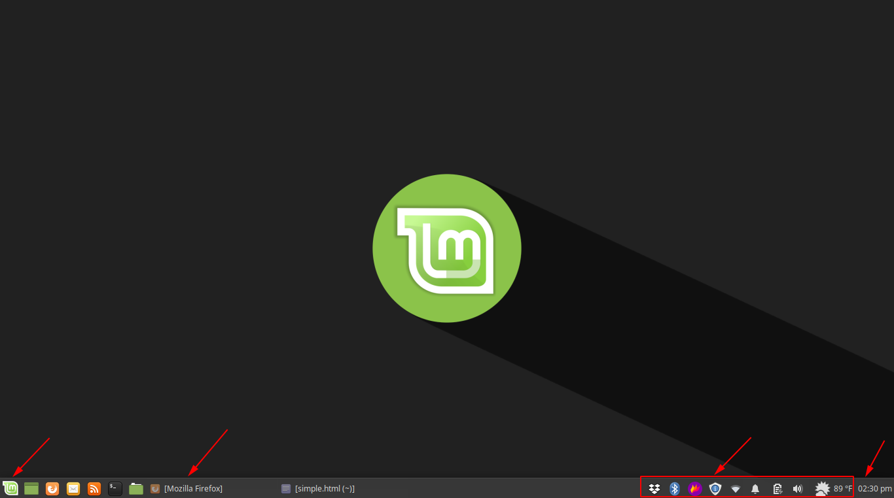
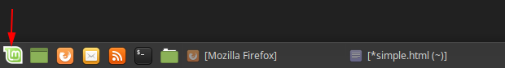
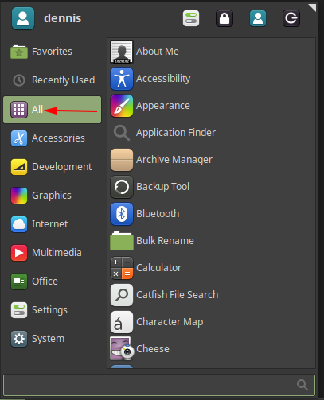

Info
This is a sample HTML help page targeting general users of a specific application.
Introduction to Linux Mint¶
Welcome to Linux Mint!
Linux Mint is a free and open source operating system based on GNU/Linux. The goal of the project is to create a viable alternative to Microsoft Windows and Apple MacOS. For more information about Linux Mint, see the official Linux Mint website. This help section walks you through Linux Mint's version of the Xfce desktop.
Note
Linux Mint also supports the Cinnamon and Mate desktop environments.
Navigating the Desktop¶
The Xfce desktop environment is a simple desktop environment similar to Windows 98 or Windows XP.
By default, the desktop includes:
- Application Launcher
- Task Launcher
- Task Tray
- Time/Calendar Widget

Note
All of these items can be customized to fit the user's needs.
The Application Launcher¶
All of the installed applications can be accessed via the Application Launcher. To access the Application Launcher, click the Linux Mint icon located on the task bar.

Applications are categorized by type or a list of all available applications can be viewed by clicking All.
